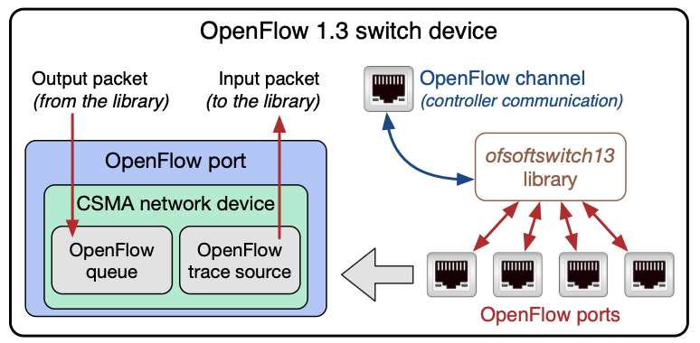
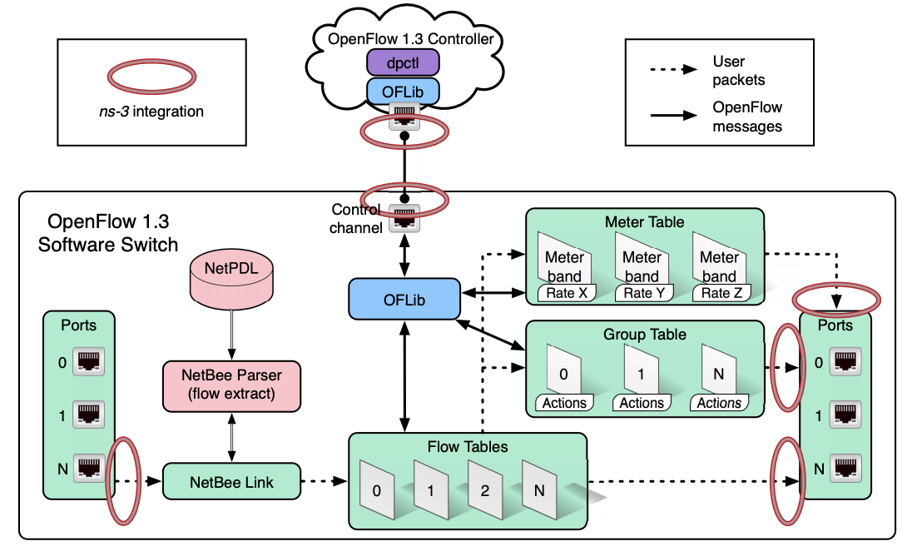
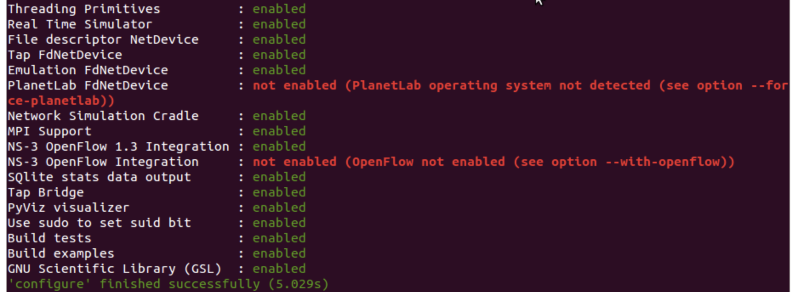
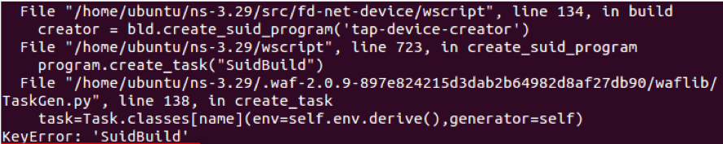
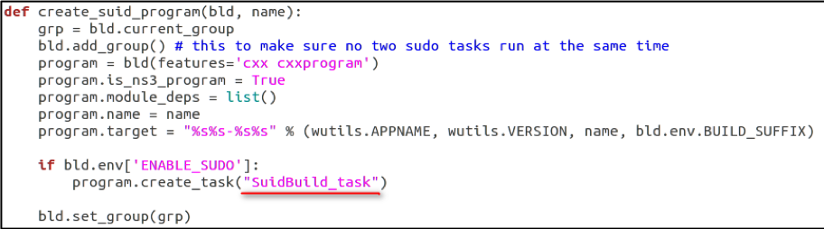

ns-3 configuration and ofswitch13 module - Tutorial
I had deployed the ns-3 simulation with ofswitch13 successfully. I've been struggling to solve the simulation platform a lot of time. So, my experience is quite valuable and self-giving sharing for the ns-3 beginners.
The following procedure can be deployed on VMware/Virtual machine or cloud instance.
If your want to know how to deploy ns-3 on remote cloud instance easily, I will post an article to demonstrate full steps.
What is ns-3 Network Simulator?
- A discrete-event network simulator for internet systems
- Free software and open source
- Packet level
- C++ for core/ Python for bindings
- Support under Linux, FreeBSD and Cygwin
ns-3 simulation workflow:
- Topology definition
- Model development
- Node and link configuration
- Execution
- Performance analysis
- Graphical Visualization
Key terms adn abstractions:
- Node: the virtual hardward (e.g., PC, server, router, smart phone, etc.)
- Network device: transimts and receives over the channel with network layer
- Channel: transmission medium between Network device (e.g. WiFi, p2p, csma)
- Application: creates or receives data packet that send between Nodes with transport layer
- Helper: ns-3 construct used to quickly configure and create the above
OpenFlow 1.3 module for ns-3
- The OFSwitch13 module, which enhances the ns-3 Network Simulator with OpenFlow 1.3 capabilities
- Allow ns-3 users to simulate Software-Defined Networks (SDN)
- Support internal/external SDN controller
 Fig. 1. The OFSwitch13Device internal structure
Main class function
- OpenFlow 1.3 switch network device It can be used to interconnect ns-3 nodes using the existing CSMA network devices and channels.
- OpenFlow 1.3 controller interface It provides the basic functionalities for controller implementation.
- OpenFlow channel It is the interface that connects each switch to an OpenFlow controller.
- ofsoftswitch13 library It provides the complete OpenFlow switch datapath implementation, including input and output ports, the flow-table pipeline for packet matching, the group table, and the meter table. It also provides the OFLib library that is used for converting internal messages to and from OpenFlow 1.3 wire format, and the dpctl utility for converting text commands into internal messages.
 Fig. 2. The ofsoftswitch13 library architecture
Start to configure and build
Step 1. You have the following packages installed on your system
1
$ sudo apt-get install build-essential gcc g++ python git mercurial unzip cmake
1
$ sudo apt-get install pkg-config autoconf libtool libboost-dev
Step 2. Download a recent stable ns-3 code (using the mercurial repository for ns-3.29)
1
$ hg clone http://code.nsnam.org/ns-3.29
Step 3. Download the OFSwitch13 code into the src/ folder
1
$ cd ns-3.29/src
1
$ git clone --recurse-submodules https://github.com/ljerezchaves/ofswitch13.git
Step 4. Update the code to the desired release version (using 4.0.0, which is compatible with ns-3.29 or later)
1
$ cd ofswitch13
1
$ git checkout 4.0.0 && git submodule update –recursive
Step 5. It is time to compile the ofsoftswitch13 as a static library (Configure and build the library)
1
$ cd lib/ofsoftswitch13
1
$ ./boot.sh
1
$ ./configure --enable-ns3-lib
Warning: if you meet an error as “perl: warning: Setting locale failed”:1
$ make
Solution: Addexport LC_ALL=“en_US.UTF-8”to bashrc file1
$ sudo vim .bashrc
1
export LC_ALL=“en_US.UTF-8”
1
$ sudo locale-gen zh_TW.UTF-8
1
$ sudo dpkg-reconfigure locales
Step 6. Go back to the ns-3 root directory and patch the ns-3 code with the appropriated patches available under the ofswitch13/utils directory
1
$ cd ../../../../
1
$ patch -p1 < src/ofswitch13/utils/ofswitch13-src-3_29.patch
1
$ patch -p1 < src/ofswitch13/utils/ofswitch13-doc-3_29.patch
Step 7. Now, configure the ns-3 (Need to check --witch-ofswitch13=your path)
1
$ ./waf configure --enable-tests --enable-examples --enable-sudo --with-ofswitch13=<br>/home/ubuntu/ns-3.29/src/ofswitch13/lib/ofsoftswitch13/
Step 8. Check for the enabled NS-3 OpenFlow 1.3 integration feature after the configuration 
Step 9. Finally, build the ns-3 simulation
Warning: if you meet an error as below:1
$ sudo ./waf

Solution: Modify “SuidBuild” → “SuidBuild_task”
1
$ sudo vim wscript
Now, you can run your first example script, enjoy it! 1
$ ./waf --run scratch/ofswitch13.first
1. Suggest moving your script to scratch folder before executing.
2. Don't add filename extension (e.g. .cc) at your execution's command line.